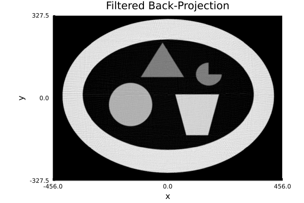

|
|
|
|  | |
| "Unfiltered back projection" is called "Back Projection" which is mathematically the dual X-ray transform. "Filtered back projection" is so-called the reconstruction formula for the X-ray transform mathematically, that is, the back projection applied by the filter which is mathematically the square root of the nonnegative Laplacian on the plane. | |